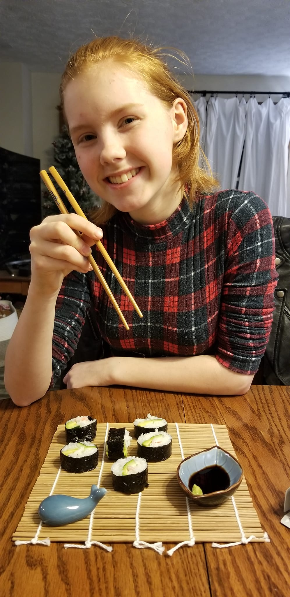
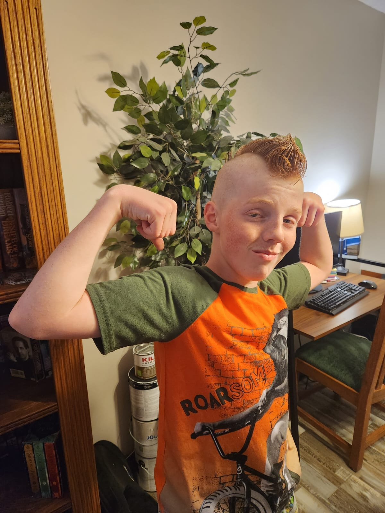

Picture this: a small town, a pizza joint, and an unlikely romance.
We both toiled away at Pizza Hut, and while I was the epitome of a perfect daughter,
Chris appeared as a pot-smoking skateboarder with a flowing blonde ponytail that rivaled mine.
Talk about an unconventional match! On one hand, I was the epitome of innocence, while he
jammed out to Sepultura, rocking to the beat of a different drum. It seemed like a recipe
for disaster, and little did I know, a ginger-colored beard was lurking in his future,
poised to lead us down a path I never anticipated. Yet, despite the odds, I took a chance
on this wild-haired rebel. And boy, am I glad I did! Behind his unruly appearance, he had
hidden depths. He strummed the guitar with the skill of a maestro, worshipped heavy metal
like a true devotee, and possessed a nerdiness that transcended time and space. He was,
without a doubt, the smartest person I knew, albeit the most stubborn. But let me tell you,
his stubbornness was only matched by his ability to make me laugh until my sides hurt. So,
dear reader, hold on tight, for this red-headed adventure is just getting started!
How It's Going...
Perrin
Ah, Perrin, the epitome of a charming ginger extraordinare! Named after
a character from the "Wheel of Time" series, paying homage to his father's unwavering nerdiness.
From the moment he graced the world with his fiery red hair, it was evident that he was destined
for something special. While Perrin may have exhibited a tad bit of whininess as a child, with a
meticulous obsession over open cabinet doors, his true nature shone through as incredibly sweet
and caring. He still leans towards introversion and shyness, finding it a struggle to ask a
waitress for extra ketchup or a box for his food. However, despite his reserved nature, he is
undoubtedly one of the most likable individuals one could ever encounter. Even from a young age,
random people and kids would joyfully shout, "Hi, Perrin!" because his affable demeanor simply
radiated charisma. Now, at the age of seventeen, Perrin has blossomed into an undeniably handsome
young man, and perhaps, just a smidge egotistical about it—haha, who can blame him for reveling
in the perks of his good looks? Alongside his undeniable charm, Perrin carries forward his dad's
nerdy legacy of a profound obsession with all things Star Wars and Lego. It seems impossible for
him to have a conversation without diving headfirst into discussions about lightsabers or a
brick-by-brick analysis of the latest Lego set. Star Wars and Lego have become an integral part of Perrin's essence,
flowing through his veins like a potent ginger elixir. He consumes, dreams, and breathes these
beloved franchises with unwavering passion. Beyond his devotion to galactic battles and intricate
constructions, Perrin exhibits a remarkable sense of responsibility and an unyielding work ethic.
His sweetness and lovable nature warm the hearts of all who have the pleasure of knowing him, while
his wit and cleverness leave them thoroughly entertained. Who knows what surprises await us in the
saga of Perrin, the ginger Jedi with a heart of gold?
Willow
Then there was Willow, the fiery-haired force to be reckoned with!
Named after the legendary character from the fantasy film "Willow," it's clear that my
husband's nerdy hold on me knows no bounds. Willow's red hair, or lack thereof during
her bald years, may have left us guessing, but her personality leaves no room for
uncertainty. Independent and introspective, she possesses a fire within that matches
the vibrancy of her hair. And let me tell you, this girl is not afraid to let you know
if you're not showering her with the love and attention she deserves. It's like a tiny
diva wrapped in a ginger package. Now, at the age of fifteen, Willow has channeled her
nerdom into a different realm: the magical land of theater. Don't even try to avoid hearing
about her latest Broadway obsession; she's a one-girl theater troupe ready to enlighten you
with all the showbiz knowledge she can muster. She's the living embodiment of progressive
ideals, donning her rainbow flag proudly and blazing a trail as a proud Gen Z advocate.
And honestly, I'm here for it. Willow is a joy to talk to, laugh with, and be around.
She's got spunk, an artistic streak, a knack for all things trendy, and a sharp mind
that leaves you in awe. Insanely likable and unapologetically herself, she embodies the
spirit of a spunky redhead navigating her way through life. As we venture into the realm
of driving with this spirited soul, we're embarking on a crash course in raising a fearless,
fiery redhead. Wish us luck as we navigate the twists and turns of Willow's remarkable journey!
Loial
 And then there was Loial, our ginger gem of comedic brilliance!
Solidifying his father's nerdy legacy, he too draws inspiration from the pages of the "Wheel
of Time" series for his name. From the moment he could string words together, Loial showcased
a natural talent for comedy. Insanely clever comebacks and quips rolled off his tongue
effortlessly, leaving us in fits of laughter. This kid has an outgoing and talkative nature
that could rival a radio host on caffeine, with a temper that once rivaled the Hulk himself.
Yes, there was a time when he resorted to biting those who dared to disagree with him.
Luckily, he outgrew that phase (or so we hope), but his sense of humor and social charm have
only grown stronger. Now at the ripe age of thirteen, this quirky, freckle-faced, ginger dynamo
has truly come into his own. Loial is a master of video games, a Dungeon Master extraordinaire
in the realm of D&D, a comedic genius who leaves us in stitches, a talented singer and drummer,
and soon-to-be a high school theater enthusiast. He's even embracing the wonders of puberty
with a mix of excitement and anticipation. With hopes of growing taller, sprouting some chest
hair, and acquiring "free muscles," he's ready to claim his dominance over his older siblings,
who once felt his mighty bites. As his voice wobbles in unpredictable ways, the jury is still
out on whether he'll surpass his siblings in height. But regardless, I'll continue to snuggle
up with my lovable boy, reveling in his quirky randomness, which, despite his ginger locks,
brings me immeasurable joy. Oh, the adventures and laughter that lie ahead with Loial, the
ginger king of comedy and unexpected surprises!